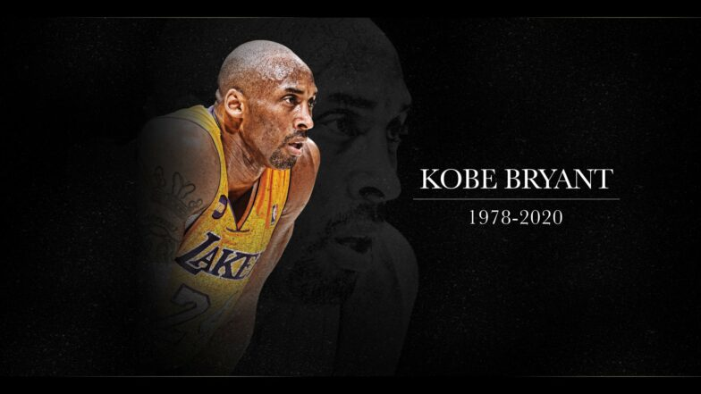

Kobe Bryant
The Black Mamba

"The moment you give up, is the moment you let someone else win." - Kobe Bryant
Timeline of Achievements
- 1966 - Finishes his high school career as the all-time leading scorer in the history of southeastern Pennsylvania basketball. He leads the Lower Merion Aces to a season record of 31-3 and the Class-AAAA state championship.
- 1996 - USA Today names Bryant the National High School Player of the Year and he wins the Naismith Player of the Year.
- June 26, 1996 - Bryant is selected by the Charlotte Hornets as the 13th pick in the first round of the NBA draft.
- July 11, 1996 - Is traded by Charlotte to the Los Angeles Lakers for Vlade Divac.
- 1996-1997 - Is named to the NBA All-Rookie Second Team.
- February 1997 - Wins the All-Star Weekend slam dunk competition, but does not play in the All-Star game.
- 1998 - Bryant is the youngest starter, at 19, in his first All-Star game.
- 1996-2016 - Guard for the Los Angeles Lakers.
- 2000-2002 - The LA Lakers win the NBA Championship three years in a row.
- 2002 - First of four times being named All-Star MVP. He’s also named in 2007, 2009 and 2011.
- January 22, 2006 - Bryant scores 81 points in the Lakers’ 122-104 win over Toronto. Only Wilt Chamberlain’s 100-point game in 1962 tops this performance.
- May 2008 - Wins the NBA regular season MVP award.
- August 24, 2008 - Bryant wins a gold medal at the Beijing Olympics as a member of the US men’s basketball team.
- June 14, 2009 - Is named the NBA Finals MVP.
- 2009-2010 - The Lakers win back-to-back NBA championships.
- February 1, 2010 - Surpasses Jerry West’s career record of 25,192 as the Los Angeles Lakers’ all-time leading scorer, with 25,208 points.
- June 17, 2010 - For the second year in a row is named the NBA Finals MVP.
- August 12, 2012 - Is a member of gold medal-winning US men’s basketball team at the 2012 London Olympics.
- March 23, 2014 - Bryant launches Kobe Inc. He also announces the company’s first investment is a 10% stake in the sports drink BodyArmor.
- December 14, 2014 - Surpasses Michael Jordan to become third on the NBA’s all-time scoring list, with 32,310 career points.
- February 2016 - Bryant announces the launch of Granity Studios (formerly known as Kobe Studios), a multimedia original content company.
- August 13, 2016 - Scores 60 points in his final game, helping the Lakers defeat the Utah Jazz 101-96.
- March 4, 2018 - Wins an Academy Award for best short animated film for “Dear Basketball.”
- February 15, 2020 - Commissioner Adam Silver announces that the MVP award for the NBA All-Star Game has been named the Kobe Bryant MVP Award.
- August 4, 2020 - Bryant is posthumously elected into the Naismith Memorial Basketball Hall of Fame.